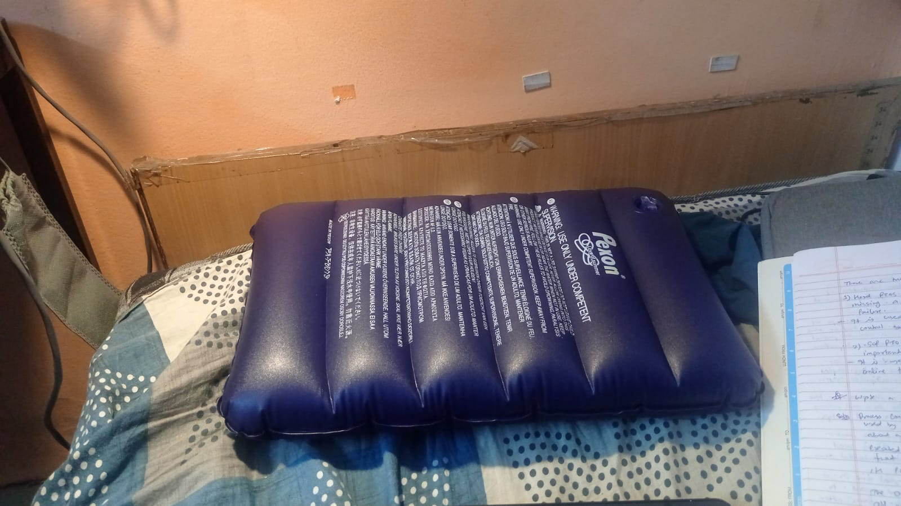
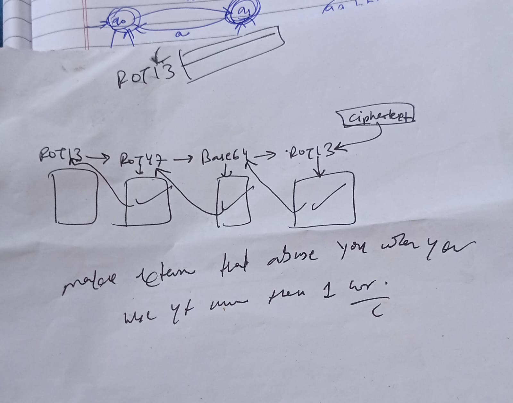
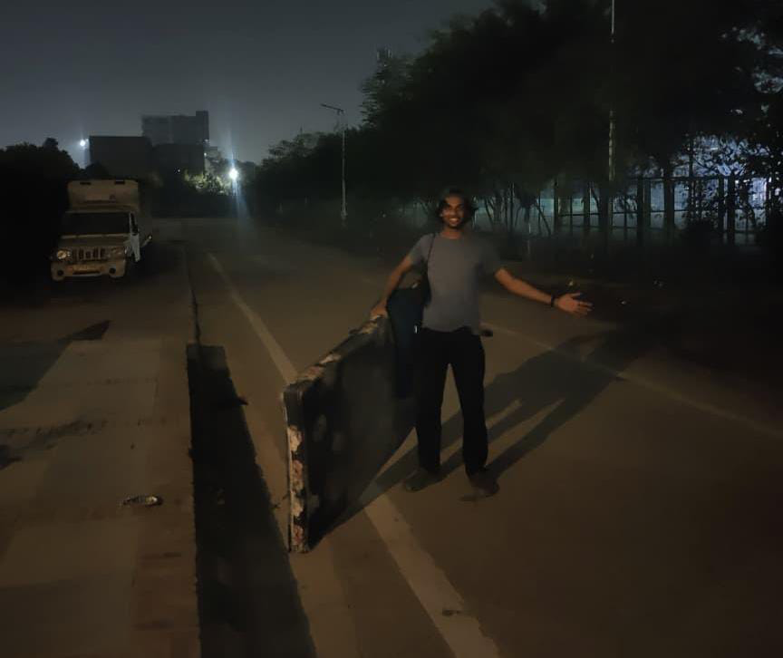
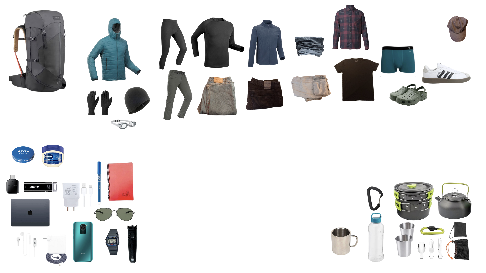
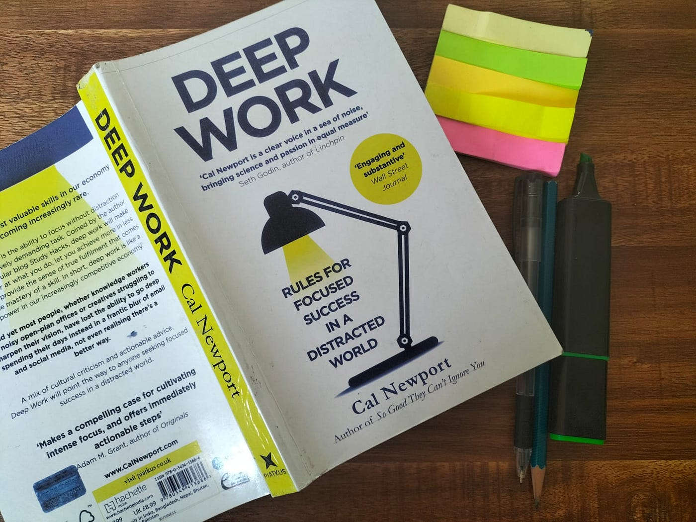

sleep
all i know about optimizing sleep from my experience and other giants ....
writing my life experiences...

all i know about optimizing sleep from my experience and other giants ....

just a simple thing to play with your developer friend...

just for the thing i want for fun...

habit is like having superpower for normal people literally to do anything he wants ....
if you go to someone house and if the kids doesn't respecting you don't go to that house again, not....

all clothing gear i have used in jan and still building to 2026 to make my life more stress free and minimalistic....

deep work = rare , hard to replicate shallow work = non demanding...

the only thing i like about casio f91w is it's just only and only watch, nothing more than that...

Once upon a time, a man at age 29 who had everything, more than today's luxury Instagram influencer, he had money, palace, respect, power, a collection of beautiful dancers...